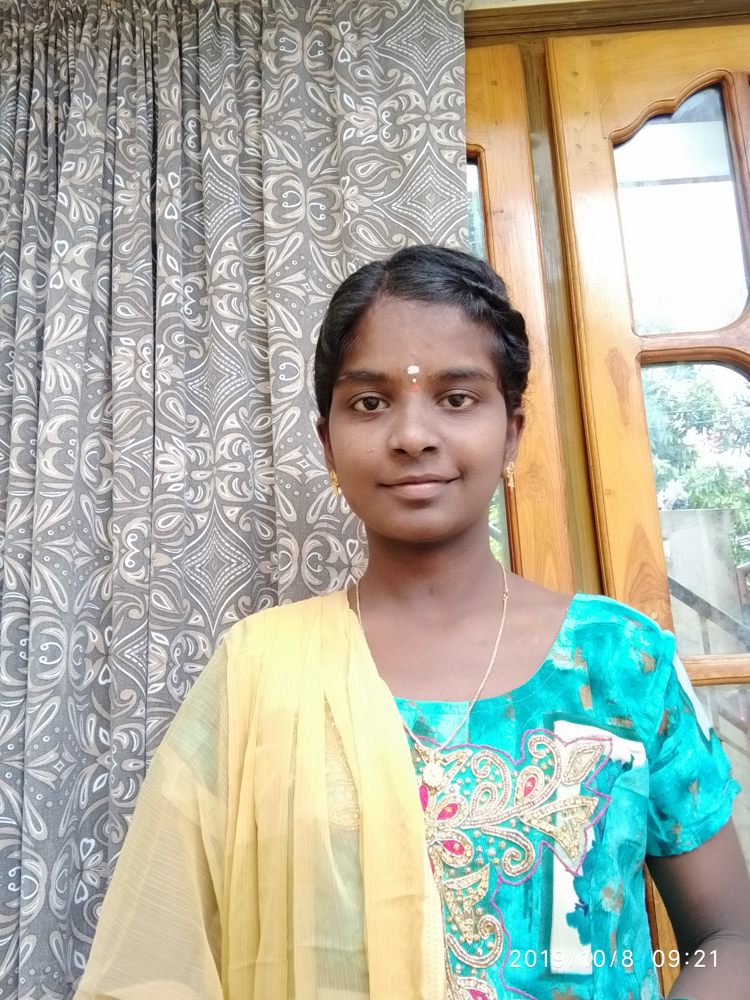

ANKISETTI LAKSHMI SAI SUPRAJA

Email-Id:supraja705@gmail.com
Mobile no:8340882729
Career objective: Seeking a challenging position in a reputed organization where i can learn new skills,expand my knowledge,and leverage my learnings
ACADEMICS:
| Qualification |
Institute |
University/Board |
Course-Duration |
Percentage/c.g.p.a |
| B.Tech |
Sri sunflower college of engineering and technology |
J.N.T.U.K |
2019-2023 |
7.20 |
| Intermediate |
Sri viswa vishaka junior college |
Board of intermediate education |
2017-2019 |
7.76 |
| Secondary Education(10TH) |
Muncipal high school |
Board of secondary education |
2016-2017 |
8.8 |
PROJECTS:
Major Project: Object detection using deep learning
Description:
- It is the process of finding and recognizing the real world object instances
- It is useful in applications like image retrival,security,surveillance,and advanced driver assistance systems(ADAS)
- It can be done in many ways like future object detection, viola jones object detection, SVM classification with HOG features and deep learning object detection
- The algorithms and libraries we used in object detection is open cv and yolo.
Mini Project:Stress Management
Description:
- The stress management meaning is to reduce the negative impacts
caused by stress and to improve a person's physical and mental wellbeing.
Stress management may include self-care, managing one's
response to stress, and making changes to one's life when in a stressful situation
- Stress management offers a range of strategies to help you better deal
with stress and difficulty (adversity) in your life. Managing stress can
help you lead a more balanced, healthier life. Stress is an automatic
physical, mental and emotional response to a challenging event. It's a
normal part of everyone's life
Technical Skills:
Programming Languages: Python,Sql,Oops,Full Stack
Packages : M.s word,M.s excel,M.s powerpoint
Certifications:
- Certified by Chekumukhi talent test at mandal level
- Certified by engineers day online quiz by SNS COLLEGE OF TECHNOLOGY.
- by APPSDC machine learning with python
- Project completion certificate by shiash info solutions pvt.ltd , Chennai
- Internship completion certificate by shiash info solutions pvt.ltd, Chennai
Personal Profile:
D.O.B-13-4-2002
Father's Name:A.Srinivasa Rao
Gender:Female
Nationality-Indian
Languages Known:Telugu,Hindi,English
Address:11-101,Cherukupalli,Bapatla District
DECLARATION:
I here by declare that particulars of facts and information stated are true,correct and complete to best of my knowledge
place:KPHB
28-06-2023